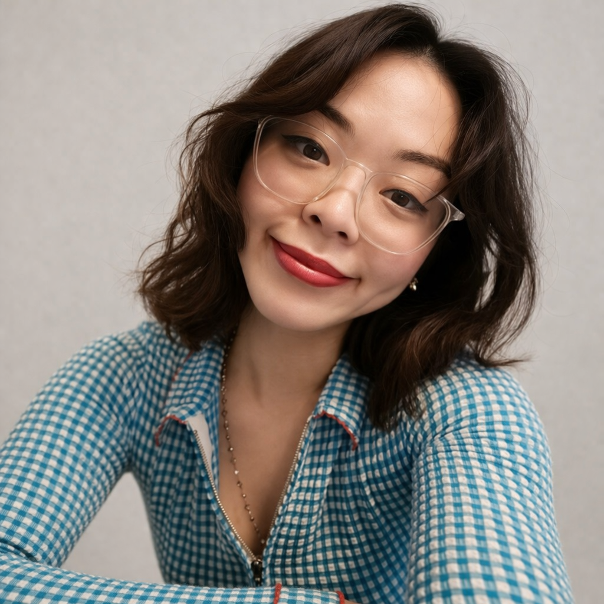

Awards & recognition
- Forbes 30 Under 30 Asia · Arts2020
- Optimism “We Love The Art” Competition · Top Prize Winner2024
- Prestige 40 Under 402023
- TIMEPieces Artist2022
b. 1990, Singapore
Lives and works between Singapore and Bangkok

Shavonne Wong is a new media artist whose work examines experiences we share but do not always have words for. She started out in fashion and advertising photography, and over time her work shifted from building hyperreal digital images to creating interactive projects that ask people to recognize something in themselves rather than arrive at any clear answer. Her recent projects use AI, 3D rendering, and participatory frameworks to sit with the contradictions of how we live today.
Wong's work has been presented at ArtScience Museum Singapore, Art SG, Taipei Dangdai, and the Venice Biennale. She was recognized in Forbes 30 Under 30 Asia (2020) and has collaborated with Vogue Singapore, Bang & Olufsen, and Marie Claire. Her 2021 project Love is Love, a generative exploration of identity and representation, gained international recognition and attracted collectors including Idris Elba.
Influenced by philosophy and critical theory, Wong approaches her work as a form of noticing rather than claiming. She uses beauty and technical control as invitations, creating work seductive enough to hold attention and strange enough to make you wonder why you are still thinking about it. Her practice asks questions she does not have answers to, trusting that the discomfort of not knowing might be more honest than the comfort of certainty.
Shavonne is a member of BLOOM, an artist collective, alongside being one of the Co-Founders of NFT Asia, a community dedicated to Asian artists in the NFT space.
Member of BLOOM, an artist collective.
Co-Founder of NFT Asia, a community dedicated to Asian artists in the NFT space.